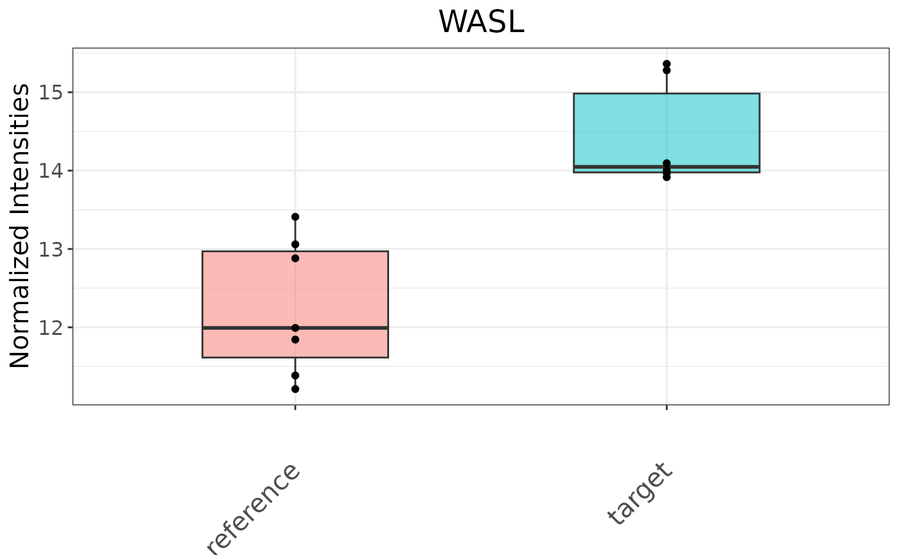

SmartPhos: a pipeline for processing and analysis of phosphoproteomic data
Shubham Agrawal, Junyan Lu
2025-03-27
Source:vignettes/SmartPhos.Rmd
SmartPhos.RmdIntroduction
Phosphoproteomics provides rich information for dissecting pathway
activities and therefore is becoming vital in basic and translational
biomedical research. To facilitate and streamline phosphoproteomics data
analysis, we developed SmartPhos, an R package for the
pre-processing, quality control, and exploratory analysis of
phosphoproteomics data generated by mass-spectrometry. SmartPhos can
process outputs from MaxQuant and Spectronaut
either using the R command line or in an interactive ShinyApp called
SmartPhos Explorer. Besides commonly used preprocessing
steps, such as normalization, transformation, imputation, and batch
effect correction, our package features a novel method for correcting
normalization artifacts observed in phosphoproteomics, especially when
large global phosphorylation changes are expected, by taking both
phospho-enriched and unenriched samples into account.
In addition, the SmartPhos Explorer
ShinyApp included in our R package provides a user-friendly
and interactive one-stop solution for performing exploratory data
analysis (PCA, hierarchical clustering, etc.), differential expression,
time-series clustering, gene set enrichment analysis, and kinase
activity analysis easily without the knowledge of coding or the
underlying statistical model.
This vignette focuses on using SmartPhos with the R
command line.
Install and load SmartPhos Package
To install SmartPhos enter the following to the
R console
if (!requireNamespace("BiocManager", quietly = TRUE))
install.packages("BiocManager")
BiocManager::install("SmartPhos")Load the package
Load the R object
data("dia_example")
dia_example## A MultiAssayExperiment object of 2 listed
## experiments with user-defined names and respective classes.
## Containing an ExperimentList class object of length 2:
## [1] Phosphoproteome: SummarizedExperiment with 500 rows and 47 columns
## [2] Proteome: SummarizedExperiment with 500 rows and 47 columns
## Functionality:
## experiments() - obtain the ExperimentList instance
## colData() - the primary/phenotype DataFrame
## sampleMap() - the sample coordination DataFrame
## `$`, `[`, `[[` - extract colData columns, subset, or experiment
## *Format() - convert into a long or wide DataFrame
## assays() - convert ExperimentList to a SimpleList of matrices
## exportClass() - save data to flat filesPreprocessing the assay, basic visualization, PCA and Heatmaps
Extract the SummarizedExperiment object from the multiAssayExperiment object
## class: SummarizedExperiment
## dim: 500 47
## metadata(0):
## assays(1): Intensity
## rownames(500): s1 s2 ... s499 s500
## rowData names(7): UniprotID Gene ... Sequence site
## colnames(47): FullProteome_1stCrtl_0min_rep2
## FullProteome_1stCrtl_0min_rep3 ... Phospho_HGF_24h_rep1
## Phospho_HGF_100min_rep1
## colData names(6): sample treatment ... sampleType sampleNamePreprocessing options
SmartPhos package performs some pre-filtering and preprocessing based on various threshold values during the generation of the multiAssayExperiment object. On top of that, this panel has different options for preprocessing of the selected assay. The options provided by the shiny app are as follows:
- Normalization correction: This option is present only if the phophoproteomics data is present. It allows for the correction of normalization artefacts introduced by the Spectronaut.
- Normalize phospho intensity by the corresponding protein expression.
- Transformation: The transformation methods available are: log2 and vst (variance stabilizing transformation).
- Normalization: Normalization strategy depends on the selected transformation method. Therefore, the user has option of Yes or No. If the user selects Yes, then for log2 and no transformation, median scaling is applied and for vst, vsn is applied.
- Missing values: Users can select what percentage of missing values are allowed. Proteins with missing values above the selected threshold will be removed from all analyses.
-
Imputation: Currently four imputation methods are
available:
- QRILC (Quantile Regression Imputation of Left-Censored data)
- MinDet (Deterministic minimal value approach)
- BPCA (Bayesian PCA)
- MLE (Maximum Likelihood Estimation)
- Random forest
- Batch effects removal: This option provides the abilty to correct for batch effects. It uses removeBatchEffect() from the limma package. The users can select the maximum of two columns. The columns used for batch effects removal should be present in the fileTable.txt file.
The preprocessing (transformation, normalization, imputation, etc.) on the intensity assay can be performed by running the following command:
newSE <- preprocessPhos(seData = se, transform = "log2", normalize = TRUE,
impute = "QRILC")Different visualization options
Plot the boxplot of assay intensities:
plotIntensity(newSE, colorByCol = "replicate")Plot the completeness (percentage of non-missing) for each sample:
plotMissing(newSE)This is performed on the original assay and not on the imputed assay.
Perform principal component analysis (PCA) by running the following command:
# perform PCA
pca <- stats::prcomp(t(assays(newSE)[["imputed"]]), center = TRUE,
scale. = TRUE)
# call the plotting function
p <- plotPCA(pca = pca, se = newSE, color = "replicate")
pHeatmap can be plotted using the plotHeatmap() function of SmartPhos. There are three different heatmaps possible based on the type argument:
- Top variant: This allows the users to plot the genes with highest variance. Users can decide the number of top variants genes to plot. This option performs clustering automatically. The user also has the option to divide the columns and rows of the heatmap into specific number of clusters using the cutCol and cutRow arguments.
- Differentially expressed: Allows to plot the heatmaps for differentially expressed genes. The differential expression analysis is available in Differential expression tab and can be performed using ProDA or Limma.
- Selected time series cluster: After performing the time-series clustering in another tab, users have option to plot the heatmap of the selected cluster.
plotHeatmap(type = "Top variant", newSE, top = 10,
annotationCol = c("replicate", "treatment"))Differential Expression Analysis
The goal of performing differential expression analysis is to quantify the expression levels of genes between different experimental conditions using statistical tests.
If the users want paired t-test on the patient IDs, cell lines, etc, then the users must have subjectID as one of the column in the fileTable.txt file with the relevant information. The subjectID column should also be selected in the additional column annotations before the generation of multiAssayExperiment object.
The performDifferentialExp() has two methods for performing differential expression analysis:
- limma: uses linear models.
- ProDA: uses probabilistic dropout model.
Limma method needs an assay with non-missing data and is faster than the proDA method. ProDA method can work on assay with missing values also.
dea <- performDifferentialExp(se = newSE, assay = "imputed", method = "limma",
condition = "treatment", reference = "EGF",
target = "1stCrtl")‘dea’ is a list object which contains two values: ‘resDE’ with tabular differential expression analysis results and ‘seSub’ which is the subsetted SummarizedExperiment object based on the selected condition.
dea$seSub## class: SummarizedExperiment
## dim: 172 13
## metadata(0):
## assays(2): Intensity imputed
## rownames(172): s4 s6 ... s499 s500
## rowData names(7): UniprotID Gene ... Sequence site
## colnames(13): Phospho_1stCrtl_0min_rep2 Phospho_1stCrtl_0min_rep3 ...
## Phospho_EGF_24h_rep1 Phospho_EGF_100min_rep1
## colData names(7): sample treatment ... sampleName comparison
dea$resDE## # A tibble: 172 × 12
## ID log2FC stat pvalue padj UniprotID Gene Multiplicity Position
## <chr> <dbl> <dbl> <dbl> <dbl> <chr> <chr> <int> <chr>
## 1 s447 2.18 4.83 0.000373 0.0641 O00401 WASL 1 256
## 2 s156 2.31 3.68 0.00296 0.243 A0A590UJ23;A0… PALM3 2 436
## 3 s184 -1.62 -3.49 0.00423 0.243 A6NKD9 CCDC… 2 251
## 4 s318 3.15 3.07 0.00933 0.401 O00139 KIF2A 1 484
## 5 s28 -2.47 -2.87 0.0136 0.421 A0MZ66 SHTN1 1 101
## 6 s4 1.01 2.83 0.0147 0.421 A0AV96 RBM47 1 519
## 7 s203 -4.26 -2.75 0.0172 0.422 A7KAX9 ARHG… 2 44
## 8 s381 1.98 2.60 0.0226 0.486 O00231 PSMD… 1 23
## 9 s173 0.927 2.45 0.0302 0.534 A6NFI3 ZNF3… 3 10
## 10 s157 1.65 2.39 0.0337 0.534 A0A590UJ23;A0… PALM3 2 439
## # ℹ 162 more rows
## # ℹ 3 more variables: Residue <chr>, Sequence <chr>, site <chr>Plot the volcano plot for the obtained differential expression analysis results by running the following command:
plotVolcano(dea$resDE)pFilter and fcFilter arguments can be used to change the thresholds for the upregulated and downregulated genes being represented in the volcano plot.
Use intensityBoxPlot() to plot the intensity data of a specified gene, with optional subject-specific lines:
intensityBoxPlot(se = dea$seSub, id = 's447', symbol = "WASL")
Time series clustering
Time series clustering is performed to group proteins/phosphopeptides based on how their level changes over time. The clusterTS() function employs fuzzy c-means clustering algorithm which considers the time-resolved trend, but not the expression levels. Thus, members of the same cluster would have a similar trend over time (e.g., all increasing or all decreasing), though their expression level can be different.
To use this function, users must have logitudinal data with timepoint annotation in their data. The time points are either unit-less numbers (e.g., 1, 2, 3) or are in hour and/or minute, which must be typed as “h” and “min”, respectively (e.g., 1min, 2min, 3h). Please notice that mixing the two said options (e.g., 1, 2min, 3) or using other unit for time (e.g., 1hour, 2minute, 3day) will likely lead to wrong results.
# call addZeroTime function to add zero timepoint to EGF treatment
newSEzero <- addZeroTime(newSE, condition = "treatment", treat = "EGF",
zeroTreat = "1stCrtl",
timeRange = c("10min","100min", "24h"))
# extract the assay
exprMat <- SummarizedExperiment::assay(newSEzero)
# call the clustering function
tsc <- clusterTS(x = exprMat, k = 5)‘tsc’ is a list object which contains two values: ‘cluster’ with tabular time series clustering results and ‘plot’ with the clusters plots.
tsc$cluster## # A tibble: 580 × 7
## feature time value cluster prob cNum clusterNum
## <fct> <fct> <dbl> <chr> <dbl> <int> <chr>
## 1 s499 Phospho_EGF_10min_rep2 14.1 cluster1 0.402 10 cluster1 (10)
## 2 s499 Phospho_EGF_10min_rep3 14.1 cluster1 0.402 10 cluster1 (10)
## 3 s499 Phospho_EGF_100min_rep2 14.3 cluster1 0.402 10 cluster1 (10)
## 4 s499 Phospho_EGF_100min_rep3 12.5 cluster1 0.402 10 cluster1 (10)
## 5 s499 Phospho_EGF_10min_rep1 8.96 cluster1 0.402 10 cluster1 (10)
## 6 s499 Phospho_EGF_24h_rep1 14.5 cluster1 0.402 10 cluster1 (10)
## 7 s499 Phospho_EGF_100min_rep1 14.6 cluster1 0.402 10 cluster1 (10)
## 8 s499 Phospho_EGF_0min_rep2 14.2 cluster1 0.402 10 cluster1 (10)
## 9 s499 Phospho_EGF_0min_rep3 14.2 cluster1 0.402 10 cluster1 (10)
## 10 s499 Phospho_EGF_0min_rep1 13.6 cluster1 0.402 10 cluster1 (10)
## # ℹ 570 more rows
tsc$plotA single gene or phospho-site time series data can also be plotted:
timerange <- unique(newSEzero$timepoint)
plotTimeSeries(newSEzero, type = "expression", geneID = "s40",
symbol = "RBM47_T519", condition = "treatment",
treatment = "EGF", timerange = timerange)Enrichment analysis
Enrichment analysis can be performed on either gene sets (gene-centric) or post-translational modification signature sets (site-centric) that are differentially expressed or in a time-series cluster.
In the latter, each set contains PTM site names with direction of regulation (up- or down-regulated) instead of gene names. Only phosphorylation sites will be considered since this pipeline supports proteomics and phosphoproteomics data.
The gene sets and PTM signature sets are derived from the Molecular Signatures Database (Subramanian, Tamayo et al.,2005; Liberzon et al., 2011, Liberzon et al., 2015) and the PTM Signature Database version 2.0.0 (Krug et al., 2019), respectively. Users are encouraged to consult the PTMsigDB website (https://proteomics.broadapps.org/ptmsigdb/) and the paper of Krug et al. for details on how PTM signature sets were curated and their annotation.
In gene-centric pathway enrichment, users can perform either Parametric Analysis of Gene Set Enrichment (PAGE) (Kim & Volsky, 2005) or Gene Set Enrichment Analysis (GSEA) (Subramanian, Tamayo et al.,2005) with Differential Expression analysis result. With Time series clustering result, we offer the Fisher’s exact test. For phospho-signature enrichment on Differential Expression analysis result, we offer PTM-Signature Enrichment Analysis (PTM-SEA), a method adapted from GSEA by Krug et al. (2019) to be applicable with the PTM Signature Database. On time series clustering result, we offer the Fisher’s exact test, in which each signature set is split into two, one containing upregulated and the other downregulated phosphosites.
Gene Enrichment analysis on differential expression analysis results
# Load the gene set
genesetPath <- system.file("shiny-app/geneset", package = "SmartPhos")
inGMT <- piano::loadGSC(paste0(genesetPath,"/Cancer_Hallmark.gmt"), type="gmt")
# Call the function
resTab <- enrichDifferential(dea = dea$resDE, type = "Pathway enrichment",
gsaMethod = "PAGE", geneSet = inGMT,
statType = "stat", nPerm = 200, sigLevel = 0.05,
ifFDR = FALSE)## Checking arguments...done!## Calculating gene set statistics...done!
## Calculating gene set significance...done!
## Adjusting for multiple testing...done!
resTab## Name Gene Number Stat p.up p.up.adj p.down
## 1 HALLMARK_APICAL_JUNCTION 1 2.5957 0.0047195 0.10383 0.99528
## 2 HALLMARK_MITOTIC_SPINDLE 4 2.0511 0.0201290 0.22142 0.97987
## p.down.adj Number up Number down
## 1 0.99528 1 0
## 2 0.99528 4 0Gene Enrichment analysis on time-series results
# Load the gene set
genesetPath <- system.file("shiny-app/geneset", package = "SmartPhos")
inGMT <- piano::loadGSC(paste0(genesetPath,
"/Chemical_and_Genetic_Perturbations.gmt"),
type="gmt")
# Call the function
clustEnr <- clusterEnrich(clusterTab = tsc$cluster,
se = newSE, inputSet = inGMT,
filterP = 0.05,
ifFDR = FALSE)
clustEnr## $table
## # A tibble: 31 × 9
## Name Gene.number Set.size pval Genes padj cluster ifSig atLeast1
## <chr> <int> <int> <dbl> <lis> <dbl> <chr> <lgl> <lgl>
## 1 BROWN_MYELOI… 2 2 0.00721 <chr> 0.794 cluste… TRUE TRUE
## 2 WANG_CISPLAT… 2 2 0.00721 <chr> 0.794 cluste… TRUE TRUE
## 3 CREIGHTON_EN… 2 2 0.00721 <chr> 0.794 cluste… TRUE TRUE
## 4 YOSHIMURA_MA… 2 2 0.00721 <chr> 0.794 cluste… TRUE TRUE
## 5 JOHNSTONE_PA… 3 6 0.00819 <chr> 1 cluste… TRUE TRUE
## 6 IVANOVA_HEMA… 3 7 0.0138 <chr> 0.794 cluste… TRUE TRUE
## 7 ACEVEDO_NORM… 2 2 0.0173 <chr> 1 cluste… TRUE TRUE
## 8 ACEVEDO_LIVE… 2 2 0.0173 <chr> 1 cluste… TRUE TRUE
## 9 ACEVEDO_LIVE… 2 2 0.0173 <chr> 1 cluste… TRUE TRUE
## 10 FARMER_BREAS… 2 3 0.0207 <chr> 0.794 cluste… TRUE TRUE
## # ℹ 21 more rows
##
## $plotPhospho Enrichment analysis on time-series results
# Load the ptm set
ptmsetPath <- system.file("shiny-app/ptmset", package = "SmartPhos")
load(paste0(ptmsetPath, "/human_PTM.rda"))
# Call the function
clustEnr <- clusterEnrich(clusterTab = tsc$cluster, se = newSE,
inputSet = ptmSetDb, ptm = TRUE, filterP = 0.05,
ifFDR = FALSE)
clustEnr## $table
## # A tibble: 4 × 9
## Name Gene.number Set.size pval Genes padj cluster ifSig atLeast1
## <chr> <int> <int> <dbl> <lis> <dbl> <chr> <lgl> <lgl>
## 1 DISEASE-PSP_P… 1 1 0.0407 <chr> 0.0712 cluste… TRUE TRUE
## 2 DISEASE-PSP_p… 1 1 0.0407 <chr> 0.0712 cluste… TRUE TRUE
## 3 DISEASE-PSP_n… 1 1 0.0407 <chr> 0.0712 cluste… TRUE TRUE
## 4 DISEASE-PSP_c… 1 1 0.0407 <chr> 0.0712 cluste… TRUE TRUE
##
## $plot
Kinase Activity Inference
SmartPhos can perform kinase activity inference based on phosphopeptides that are differentially expressed or in a cluster. Similar to enrichment analysis, users would first need to perform either a differential expression analysis or time-series clustering and select a cluster of interest.
A network of kinase-phosphosite interactions is constructed using the package OmnipathR (Türei et al., 2021). Users can choose to construct this network with prior knowledge from either Homo sapiens (taxonomy ID = 9606) or Mus musculus (taxonomy ID = 10090).
By combining prior knowledge about known kinase-phosphosite interactions and the data, SmartPhos can infer the activity of the kinases responsible for the phosphopeptides being considered. The activity is estimated by an activity score computed with the package decoupleR (Badia-I-Mompel et al., 2022) following the authors’ tutorial on Kinase and Transcription Factor activity estimation. For time-series clustering, users can also estimate how likely the kinases are associated with phosphopeptides in the selected cluster.
Kinase activity inference on differential expression analysis results
netw <- getDecouplerNetwork("Homo sapiens")
scoreTab <- calcKinaseScore(dea$resDE, netw, statType = "stat", nPerm = 500)Session Info
## R version 4.5.1 (2025-06-13)
## Platform: x86_64-pc-linux-gnu
## Running under: Ubuntu 24.04.2 LTS
##
## Matrix products: default
## BLAS: /usr/lib/x86_64-linux-gnu/openblas-pthread/libblas.so.3
## LAPACK: /usr/lib/x86_64-linux-gnu/openblas-pthread/libopenblasp-r0.3.26.so; LAPACK version 3.12.0
##
## locale:
## [1] LC_CTYPE=C.UTF-8 LC_NUMERIC=C LC_TIME=C.UTF-8
## [4] LC_COLLATE=C.UTF-8 LC_MONETARY=C.UTF-8 LC_MESSAGES=C.UTF-8
## [7] LC_PAPER=C.UTF-8 LC_NAME=C LC_ADDRESS=C
## [10] LC_TELEPHONE=C LC_MEASUREMENT=C.UTF-8 LC_IDENTIFICATION=C
##
## time zone: UTC
## tzcode source: system (glibc)
##
## attached base packages:
## [1] stats4 stats graphics grDevices utils datasets methods
## [8] base
##
## other attached packages:
## [1] SmartPhos_0.99.26 MultiAssayExperiment_1.34.0
## [3] SummarizedExperiment_1.38.1 Biobase_2.68.0
## [5] GenomicRanges_1.60.0 GenomeInfoDb_1.44.1
## [7] IRanges_2.42.0 S4Vectors_0.46.0
## [9] BiocGenerics_0.54.0 generics_0.1.4
## [11] MatrixGenerics_1.20.0 matrixStats_1.5.0
## [13] BiocStyle_2.36.0
##
## loaded via a namespace (and not attached):
## [1] splines_4.5.1 later_1.4.2 norm_1.0-11.1
## [4] bitops_1.0-9 tibble_3.3.0 preprocessCore_1.70.0
## [7] XML_3.99-0.18 lifecycle_1.0.4 doParallel_1.0.17
## [10] lattice_0.22-7 MASS_7.3-65 magrittr_2.0.3
## [13] limma_3.64.1 sass_0.4.10 rmarkdown_2.29
## [16] jquerylib_0.1.4 yaml_2.3.10 httpuv_1.6.16
## [19] doRNG_1.8.6.2 cowplot_1.2.0 MsCoreUtils_1.20.0
## [22] RColorBrewer_1.1-3 abind_1.4-8 purrr_1.1.0
## [25] AnnotationFilter_1.32.0 itertools_0.1-3 sandwich_3.1-1
## [28] proDA_1.22.1 circlize_0.4.16 GenomeInfoDbData_1.2.14
## [31] pheatmap_1.0.13 missForest_1.5 MSnbase_2.34.1
## [34] parallelly_1.45.0 pkgdown_2.1.3 ncdf4_1.24
## [37] codetools_0.2-20 DelayedArray_0.34.1 DT_0.33
## [40] tidyselect_1.2.1 gmm_1.8 Spectra_1.18.2
## [43] shape_1.4.6.1 UCSC.utils_1.4.0 farver_2.1.2
## [46] jsonlite_2.0.0 GetoptLong_1.0.5 e1071_1.7-16
## [49] iterators_1.0.14 systemfonts_1.2.3 foreach_1.5.2
## [52] tools_4.5.1 ragg_1.4.0 Rcpp_1.1.0
## [55] glue_1.8.0 SparseArray_1.8.1 BiocBaseUtils_1.10.0
## [58] xfun_0.52 decoupleR_2.14.0 piano_2.24.0
## [61] dplyr_1.1.4 shinydashboard_0.7.3 withr_3.0.2
## [64] BiocManager_1.30.26 fastmap_1.2.0 shinyjs_2.1.0
## [67] DEP_1.30.0 relations_0.6-15 caTools_1.18.3
## [70] digest_0.6.37 R6_2.6.1 mime_0.13
## [73] imputeLCMD_2.1 textshaping_1.0.1 colorspace_2.1-1
## [76] gtools_3.9.5 utf8_1.2.6 tidyr_1.3.1
## [79] data.table_1.17.8 class_7.3-23 PSMatch_1.12.0
## [82] httr_1.4.7 htmlwidgets_1.6.4 S4Arrays_1.8.1
## [85] sets_1.0-25 pkgconfig_2.0.3 gtable_0.3.6
## [88] ComplexHeatmap_2.24.1 impute_1.82.0 XVector_0.48.0
## [91] htmltools_0.5.8.1 bookdown_0.43 fgsea_1.34.2
## [94] MALDIquant_1.22.3 ProtGenerics_1.40.0 clue_0.3-66
## [97] scales_1.4.0 tmvtnorm_1.6 png_0.1-8
## [100] knitr_1.50 MetaboCoreUtils_1.16.1 tzdb_0.5.0
## [103] reshape2_1.4.4 rjson_0.2.23 visNetwork_2.1.2
## [106] proxy_0.4-27 cachem_1.1.0 zoo_1.8-14
## [109] GlobalOptions_0.1.2 stringr_1.5.1 KernSmooth_2.23-26
## [112] parallel_4.5.1 mzID_1.46.0 vsn_3.76.0
## [115] desc_1.4.3 pillar_1.11.0 grid_4.5.1
## [118] vctrs_0.6.5 gplots_3.2.0 pcaMethods_2.0.0
## [121] slam_0.1-55 promises_1.3.3 randomForest_4.7-1.2
## [124] xtable_1.8-4 cluster_2.1.8.1 evaluate_1.0.4
## [127] readr_2.1.5 mvtnorm_1.3-3 cli_3.6.5
## [130] compiler_4.5.1 rlang_1.1.6 crayon_1.5.3
## [133] rngtools_1.5.2 labeling_0.4.3 QFeatures_1.18.0
## [136] marray_1.86.0 affy_1.86.0 plyr_1.8.9
## [139] fs_1.6.6 stringi_1.8.7 BiocParallel_1.42.1
## [142] assertthat_0.2.1 lazyeval_0.2.2 Matrix_1.7-3
## [145] hms_1.1.3 ggplot2_3.5.2 statmod_1.5.0
## [148] shiny_1.11.1 mzR_2.42.0 igraph_2.1.4
## [151] affyio_1.78.0 bslib_0.9.0 fastmatch_1.1-6